Welcome
 I'm a Director of Research at Meta Reality labs, where I am leading egocentric machine perception and Spatial AI research as part of Meta’s Project Aria. I'm interested in how AI models can be grounded in the physical 3D world around them, and learn from humans changing the world.
I'm a Director of Research at Meta Reality labs, where I am leading egocentric machine perception and Spatial AI research as part of Meta’s Project Aria. I'm interested in how AI models can be grounded in the physical 3D world around them, and learn from humans changing the world.
I have 10+ years of experience working on SLAM, 3D scene understanding and user/environment interaction tracking, leading both research projects as well as shipping core localization technology into Meta’s MR and VR product lines including Quest and Orion.
I recieved my Ph.D. in Computer Science at the Computer Vision Group at the Technical University of Munich in 2016, working on autonomous robot navigation, pioneering direct methods including DSO and LSD-SLAM, which recieved the ECCV 2024 Koenderink (test of time) award.
Links:
GitHub -
 Google Scholar -
LinkedIn
Google Scholar -
LinkedIn
Contact:
jajuengel@gmail.com
PhD Thesis (finally online):
 [pdf]
[pdf]
Publications on this website are out-of-date..
Project Highlights
Direct Sparse Odometry
DSO is a direct and sparse visual odometry method I developed, that combines the benefits of direct methods with those of sparse, point-based methods - greatly exceeding LSD-SLAM in runtime, accuracy and robustness. I developed DSO partly during my internship with Prof. Vladlen Koltun at Intel, and partly during my PhD at TU Munich with Prof. Daniel Cremers. You can find the open-source code on GitHub. We also created the TUM monoVO dataset, 50 real-world, "out-of-the-lab" monocular sequences for benchmarking and evaluation which can be found here.
Development and extention of DSO is carried on in the TU Munich Computer Vision group, see here.
Original Publication (TPAMI): [pdf] (see Publications for more related papers)
Large-Scale Direct Monocular SLAM
LSD-SLAM is a semi-dense, direct SLAM method I developed during my PhD at TUM. It was based on a
semi-dense monocular odometry approach,
and - together with colleagues and students - we extended it to
run in real-time on a smartphone,
run with stereo cameras,
run as a tightly coupled visual-inertial odometry,
run on omnidirectional cameras,
and even to be used for autonomously navigating a toy quadrocopter.
For the original monocular version, we published open-source code on GitHub.
Original Publication (ECCV): [pdf] (see Publications for more related papers)
Autonomous Quadrocopter Flight
For my Master's Thesis (also at TUM, with Juergen Sturm and Daniel Cremers), I worked on allowing a low-cost commodity quadrocopter (Parrot AR.Drone) fly autonomously in unknown environments, using PTAM. The resulting system was demonstrated in public on many occasions; you can find the open-source code on GitHub.
Original Publication (RAS): [pdf] (see Publications for more related papers)
Publications
2017
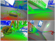
Large-Scale Direct SLAM and 3D Reconstruction in Real-Time (J. Engel), PhD thesis, Technical University Munich, 2017.
[pdf]
[bib]
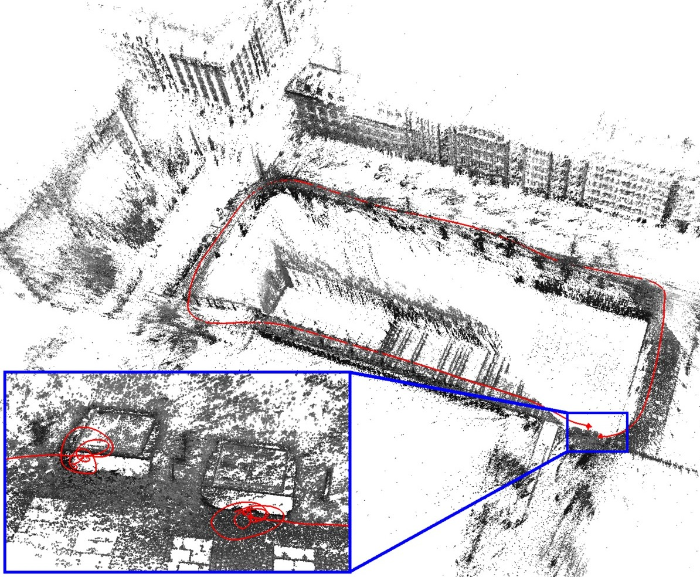
Direct Sparse Odometry (J. Engel, V. Koltun, D. Cremers), In Transactions on Pattern Analysis and Machine Intelligence, volume PP, Issue 99, 2017.
[pdf]
[bib]
[video]
[code]
[2016 arXiv version]
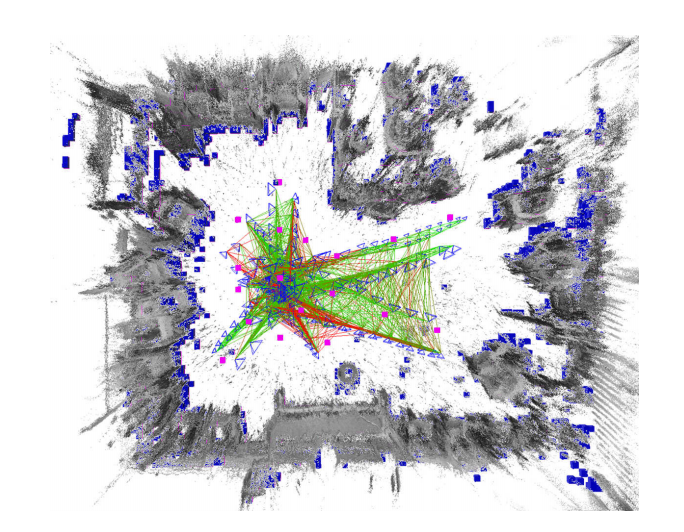
From Monocular SLAM to Autonomous Drone Exploration (L. von Stumberg, V. Usenko, J. Engel, J. Stueckler, D. Cremers), In European Conference on Mobile Robots (ECMR), 2017.
[pdf]
[bib]
[video]
[2016 arXiv version]
2016
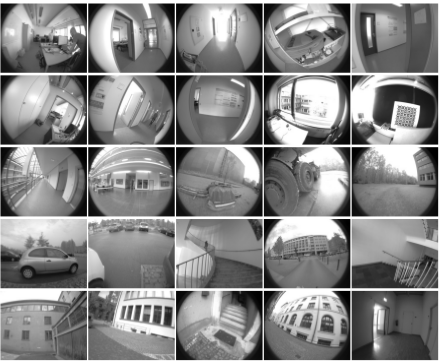
A Photometrically Calibrated Benchmark For Monocular Visual Odometry (J. Engel, V. Usenko, D. Cremers), In arXiv:1607.02555, 2016.
[pdf]
[bib]
[data/code]
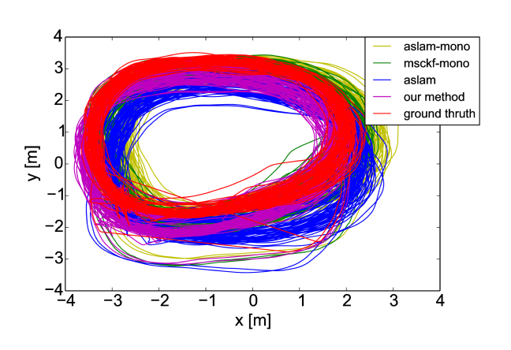
Direct Visual-Inertial Odometry with Stereo Cameras (V. Usenko, J. Engel, J. Stueckler, D. Cremers), In International Conference on Robotics and Automation (ICRA), 2016.
[pdf]
[bib]
[video]
2015
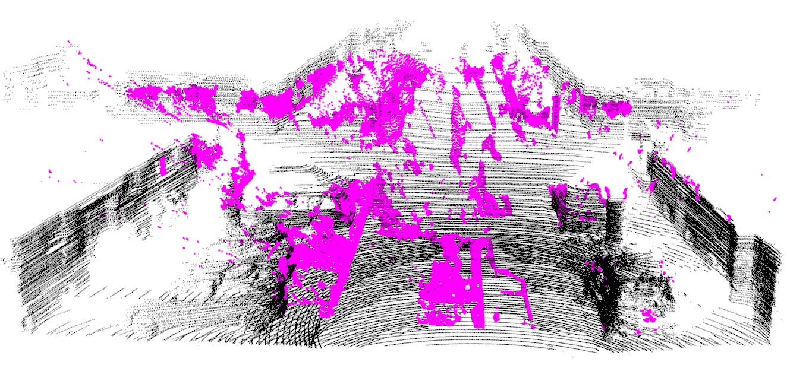
Reconstructing Street-Scenes in Real-Time From a Driving Car (V. Usenko, J. Engel, J. Stueckler, D. Cremers), In International Conference on 3D Vision (3DV), 2015.
[pdf]
[bib]
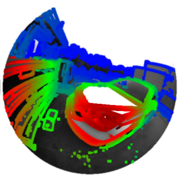
Large-Scale Direct SLAM for Omnidirectional Cameras (D. Caruso, J. Engel, D. Cremers), In International Conference on Intelligent Robots and Systems (IROS), 2015.
[pdf]
[bib]
[video]
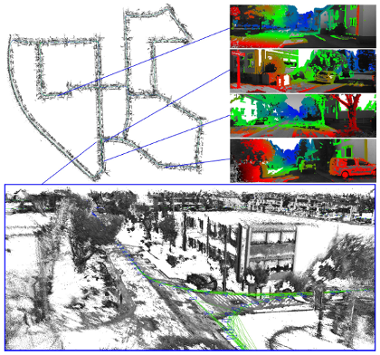
Large-Scale Direct SLAM with Stereo Cameras (J. Engel, J. Stueckler, D. Cremers), In International Conference on Intelligent Robots and Systems (IROS), 2015.
[pdf]
[bib]
[video]
2014
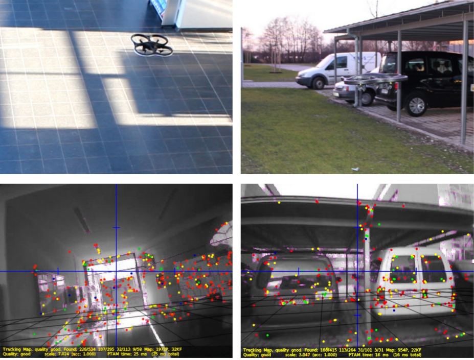
Scale-Aware Navigation of a Low-Cost Quadrocopter with a Monocular Camera (J. Engel, J. Sturm, D. Cremers), In Robotics and Autonomous Systems (RAS), volume 62, 2014.
[pdf]
[bib]
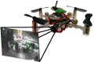
Visual-Inertial Navigation for a Camera-Equipped 25g Nano-Quadrotor (O. Dunkley, J. Engel, J. Sturm, D. Cremers), In IROS2014 Aerial Open Source Robotics Workshop, 2014.
[pdf]
[bib]
[video]
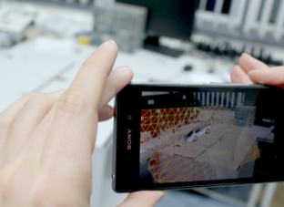
Semi-Dense Visual Odometry for AR on a Smartphone (T. Sch\F6ps, J. Engel, D. Cremers), In International Symposium on Mixed and Augmented Reality (ISMAR), 2014.
[pdf]
[bib]
[video]
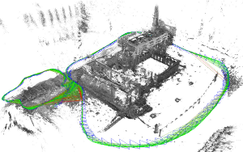
LSD-SLAM: Large-Scale Direct Monocular SLAM (J. Engel, T. Sch\F6ps, D. Cremers), In European Conference on Computer Vision (ECCV), 2014.
[pdf]
[bib]
[video]
[code]
2013
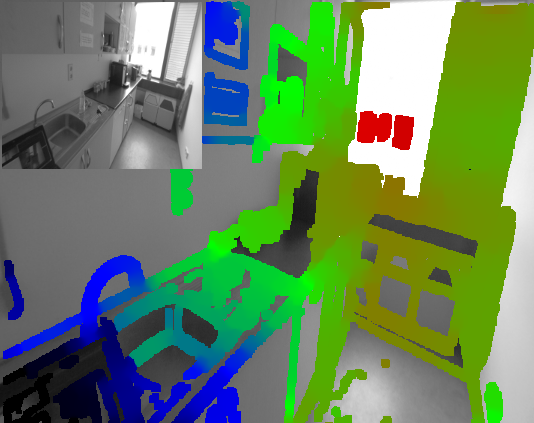
Semi-Dense Visual Odometry for a Monocular Camera (J. Engel, J. Sturm, D. Cremers), In International Conference on Computer Vision (ICCV), 2013.
[pdf]
[bib]
[video]
2012
Accurate Figure Flying with a Quadrocopter Using Onboard Visual and Inertial Sensing (J. Engel, J. Sturm, D. Cremers), In Workshop on Visual Control of Mobile Robots (ViCoMoR) at the International Conference on Intelligent Robot Systems (IROS), 2012.
[pdf]
[bib]
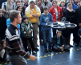
Camera-Based Navigation of a Low-Cost Quadrocopter (J. Engel, J. Sturm, D. Cremers), In International Conference on Intelligent Robot Systems (IROS), 2012.
[pdf]
[bib]
[video]
[code]
2011
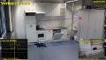
Autonomous Camera-Based Navigation of a Quadrocopter (J. Engel), Master's thesis, Technical University Munich, 2011.
[pdf]
[bib]
2009
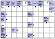
Generating Swedish-style Crossword Puzzle Masks using Evolutionary Algorithms (J. Engel), Bachelor's thesis, Technical University Munich, 2009.
[pdf]
[bib]